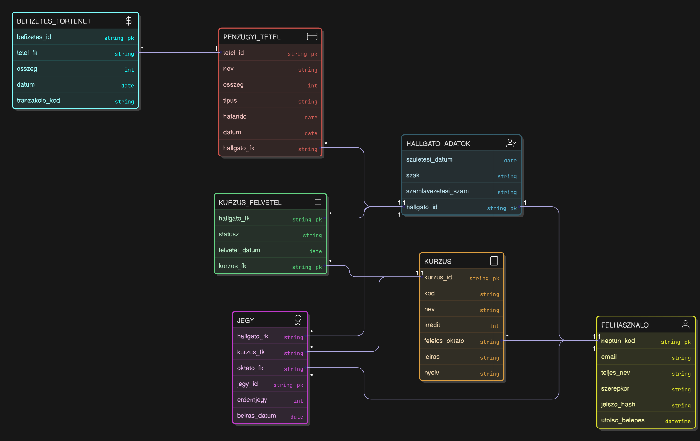

Csoport neve: BETYÁRBRIGANTIK
Feladat sorszáma: 5
Feladat címe: Janus webalkalmazás
Rendszertervezés
Gyakorlatvezető:
SÁTÁN ÁDÁM
Csoport tagok:
|
SÁTÁN ÁDÁM |
TANKÖR |
adam.satan@uni-miskolc.hu vagy satan@iit.uni-miskolc.hu |
|
KOCSÁN LÁSZLÓ |
EK298H |
kocsalaci12@gmail.com |
|
UJVÁRI ZSOMBOR BALÁZS |
QPQ7K4 |
zsombor.dobcsi@gmail.com |
|
VÁGÁSI BENCE |
FNCCGA |
bence.vagasi@gmail.com |
|
HÉJJAS GYULA |
E24HDO |
hejjasgyula2004@gmail.com |
|
POCSAI BÁLINT |
EQJL0O |
pocsaibalint@gmail.com |
2025.11.24.
Történet
|
Dátum |
Verzió |
Leírás |
Szerző |
|
2025. 11. 21. |
1.0 |
Kezdeti váz, struktúra és a 2. fejezet (Felhasználói felület) kidolgozása. |
Ujvári Zsombor Balázs |
|
2025. 11. 23. |
1.1 |
Adatmodellek (3.3-3.4), Tesztelési Terv (5.) és Funkcionális kiegészítés (4.) kidolgozása. |
Héjjas Gyula, Pocsai Bálint |
|
2025. 11. 24. |
1.2 |
Végső formai ellenőrzés, dokumentum leadásra kész. |
Kocsán László |
Tartalomjegyzék
2.2. Oktatói/Adminisztrátori Felület Terv
3.1. Adatbázis kezelő kiválasztása
3.3.1. Főbb MySQL táblák terve
3.4. Az adatbázis kezelővel kapcsolatot tartó osztályok
4. A funkcionális modell kiegészítése
5.3. Felhasználói Felület Tesztelése (Frontend)
A Rendszertervezés dokumentum a Janus webalkalmazás tervezési fázisának eredményeit összegzi. Célja, hogy az Analízis Modell (H4) és a Szoftver Követelmény Specifikáció (SRS) alapján meghatározza a rendszer fizikai és technikai megvalósításának részleteit. Kiemelten foglalkozik a felhasználói felület megtervezésével és az MySQL adatbázis pontos kialakításával.
A felhasználói felület terve. A felület tervezése során a Next.js, TypeScript és a Tailwind CSS/HeroUI technológiákat használjuk, biztosítva a modern és reszponzív megjelenést. A cél egy felhasználóbarát, letisztult felület létrehozása, amely minden eszközön egységes élményt nyújt.
A Hallgatói felület egy központi irányítópulttal indul, amely összefoglalja a legfontosabb információkat: aktuális félév, kreditállás, kiírt vizsgák száma és pénzügyi egyenleg. A navigáció menüpontjai: Tanulmányok (Kurzusfelvétel, Jegyek), Vizsgák, Pénzügyek, Üzenetek. A felület minimalista, HeroUI komponensekre épül.
Az Oktatói felület a kurzusadminisztrációra és a jegybeírásra fókuszál. Egy táblázatos nézetet használ, amely lehetővé teszi a jegyek gyors beírását és a Hallgatói listák kezelését. Az Adminisztrátori felület egy elkülönített, magas biztonsági szinttel védett felület, amely jogosultságkezelésre, adatbázis-karbantartásra és statisztikai riportok futtatására szolgál.
Ez a fejezet az alkalmazás perzisztens adatainak elrendezését és az adatbázis kapcsolatát írja le, az Analízis Modell osztályai alapján. A perzisztenciát a MySQL adatbázis biztosítja.
A választott adatbázis-kezelő a MySQL 8.0, amely egy relációs adatbázis-kezelő rendszer. Kiemelt szempont volt a megbízhatóság, a tranzakciókezelési képesség és az alacsony üzemeltetési költség. A kapcsolatot az alkalmazás és az adatbázis között a Java Spring Boot backend Spring Data JPA modulja biztosítja.
A szemantikai adatmodell megtervezése E-R (Entitás-Kapcsolat) diagrammal történik. Ez a diagram az Analízis Modell főbb osztályait (Entitásait) és a köztük lévő logikai kapcsolatokat, valamint a kardinalitásokat (számosságokat) ábrázolja, függetlenül a fizikai megvalósítástól.
A főbb entitások azonosítása: Felhasználó, Kurzus, Vizsga, Jegy, PénzügyiTétel. A Hallgató és Kurzus közötti KurzusFelvétel mint asszociációs entitás szerepel a modellben.
E-R Diagram hivatkozás: 1. ábra
A relációs adatmodellre konvertálás az E-R diagramból történik, amelynek eredménye a táblák, oszlopok, elsődleges kulcsok (Primary Keys) és idegen kulcsok (Foreign Keys) rendszere, amely a MySQL adatbázis sémáját képezi. A konverzió során az N:M kapcsolatok (pl. Hallgató és Kurzus) külön összekötő táblákká alakulnak.
A főbb táblák tervezete, melyek a Tanulmányi Alrendszer alapját képezik:
| TÁBLA | OSZLOP (KULCS) | LEÍRÁS |
| FELHASZNÁLÓ | neptun_kod (PK), email, teljes_nev, szerepkor, jelszo_hash, utolso_belepes | Azonosítási, kapcsolattartási és belépési adatok. |
| HALLGATO_ADATOK | hallgato_id (PK, FK: FELHASZNÁLÓ), szuletesi_datum, szak, szamlavezetesi_szam | Specifikus hallgatói és pénzügyi adatok. |
| KURZUS | kurzus_id (PK), kod, nev, kredit, felelos_oktato (FK), leiras, nyelv | Tantárgyak, leírások, nyelvi beállítások és alapadatok. |
| KURZUS_FELVETEL | hallgato_fk (PK, FK), kurzus_fk (PK, FK), statusz, felvetel_datum | N:M kapcsolat a Hallgató és Kurzus között. |
| JEGY | jegy_id (PK), hallgato_fk (FK), kurzus_fk (FK), erdemjegy, beiras_datum, oktato_fk (FK) | Hallgatói eredmények, beírás dátuma és felelős oktató. |
| PÉNZÜGYI_TÉTEL | tetel_id (PK), hallgato_fk (FK), nev, osszeg, tipus, hatarido, datum | Tandíj, vizsgadíj és befizetési határidők. |
| BEFIZETES_TÖRTÉNET | befizetes_id (PK), tetel_fk (FK: PÉNZÜGYI_TÉTEL), osszeg, datum, tranzakcio_kod | Részletes befizetési adatok és tranzakciókövetés. |
A Spring Boot keretrendszerben az adatbázis-kapcsolatot az ORM (Object-Relational Mapping) réteg végzi, Spring Data JPA használatával.
Ezek az osztályok biztosítják, hogy a Java Spring Boot backend tranzakciókezelése megbízható legyen, és a RESTful API-n keresztül gyorsan tudjon adatot szolgáltatni a Next.js frontend számára.
Ebben a fázisban a kritikus funkciók kivételes és alternatív feldolgozási folyamatai kerülnek részletes dokumentálásra, ha az SRS-ben szereplő Use Case leírások ezt igénylik. A fő hangsúly az adatintegritás megőrzésén és a hibák felhasználóbarát kezelésén van.
A Java/Spring Boot backend üzleti logikáját a JUnit 5 keretrendszerrel és a Mockito könyvtárral tervezzük tesztelni. Főbb teszt esetek, amelyek a tranzakciókezelést és a jogosultságokat ellenőrzik:
A Spring Data JPA réteg és a MySQL közötti kommunikáció tesztelése. Főbb teszt esetek:
A Next.js frontend funkcionális tesztelését a Jest és a Testing Library segítségével tervezzük végezni. Főbb teszt esetek:
Végül itt következhet még további fejezetekben minden olyan, ami a részletes tervezés során dokumentálandó. Például ide kerülhetnek az implementációhoz szükséges osztályok tervei, osztálydiagramjai, fontosabb algoritmusok és adatszerkezetek leírásai stb. Mivel a csoport az implementációs fázist a tervek alapján végzi, forráskód leadása ebben a szakaszban nem történt.
Rendszertervezés: A szoftver fizikai és technikai felépítésének megtervezése az analízis alapján.
Next.js: Modern JavaScript/TypeScript alapú webes keretrendszer frontend alkalmazások készítésére.
TypeScript: A JavaScript típusos kiterjesztése, amely biztonságosabb és átláthatóbb fejlesztést biztosít.
Tailwind CSS: Segédosztályokból (utility class) építkező CSS keretrendszer, amely gyorsítja a modern webes UI-ok fejlesztését.
HeroUI: Előre elkészített, modern webes UI komponensek gyűjteménye.
perzisztencia: Az adatok tartós tárolása adatbázisban vagy más tárolórendszerben.
Spring Boot: Java-alapú keretrendszer, amely leegyszerűsíti backend alkalmazások fejlesztését.
Spring Data JPA: A Spring keretrendszer része, amely automatikusan kezeli az adatbázis-leképezést és lekérdezéseket.
szemantikai adatmodell: Az adatok tényleges jelentésén alapuló logikai modell (pl. E-R diagram).
kardinalitás / számosság: A kapcsolatban résztvevő elemek darabszáma (pl. 1:N vagy N:M kapcsolat).
adatintegritás: Az adatok pontosságának és következetességének biztosítása.
rollback: Hibakezelési folyamat, amely visszaállítja az adatbázist a tranzakció előtti állapotra.
aszinkron folyamat: Olyan művelet, amely a háttérben fut anélkül, hogy a fő programot megvárakoztatná.
SMTP: E-mail küldésére szolgáló kommunikációs protokoll.
Unit teszt: Olyan teszt, amely egyetlen függvény vagy komponens helyes működését vizsgálja.
JUnit: Java alapú tesztelési keretrendszer.
Mockito: Mock objektumok létrehozására képes Java tesztkönyvtár.
Határérték-analízis: Tesztelési módszer, amely extrém vagy határértékhez közeli bemeneteket vizsgál.
Ekvivalencia-particionálás: Tesztelési módszer, amely a bemeneteket csoportokra bontja, és ezekből választ reprezentatív teszteseteket.
Integrációs teszt: Több komponens vagy réteg együttes működésének tesztelése.
API endpoint: Konkrét cím, amelyen keresztül a kliens kommunikál a szerverrel (pl. /api/v1/jegy).
Postman: API-k tesztelésére használt külső eszköz.
szerepkör alapú hozzáférés: Olyan megoldás, ahol a felhasználók csak a szerepkörükhöz tartozó funkciókat érhetik el.
perzisztens adat: Olyan adat, amely tartósan, hosszú távon tárolódik.
tranzakciós integritás: A tranzakciók hibamentes és teljes körű végrehajtásának garantálása.
1. ábra E-R diagram
{kind=link}